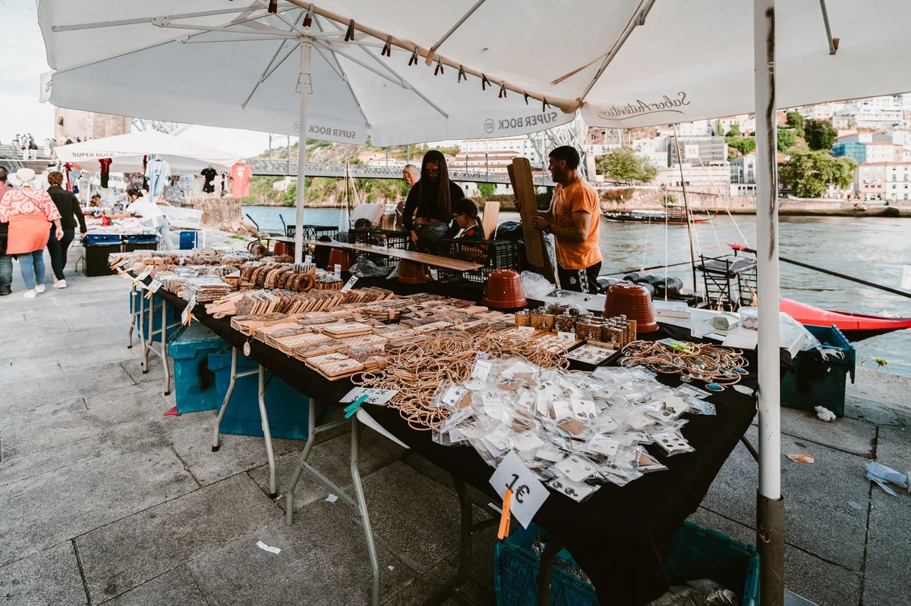

Introduction
Everyone who writes about living in Porto Bonfim like a local seems to be describing the same imaginary neighbourhood: budget-friendly, well-connected, authentically Portuguese, still undiscovered. That version of Bonfim is increasingly a myth. The district is changing fast, rents climbed sharply through 2024 and 2025, and the expat presence is dense enough now that several streets around Rua de Antero de Quental and Rua do Bonfim feel closer to a soft-launch digital nomad campus than a working-class Portuguese neighbourhood.
That is not necessarily bad news. It is just the truth, and the truth is the only useful starting point for someone who actually wants to build a life here rather than perform one on Instagram. Bonfim still has extraordinary bones: genuine tile-fronted buildings, neighbourhood bakeries that have not been rebranded as artisanal anything, a population of older Porto residents who remember when the whole hill was a factory district, and a public transport grid that makes the rest of the city legible without needing a car.
What this guide attempts is something different from the standard expat roundup. Instead of confirming what you have already read, it challenges several of the most repeated claims about the neighbourhood, maps out where Bonfim is genuinely going in 2026, and gives concrete information that is actually useful once you arrive. No cheerleading, no vague reassurances about authenticity. Just what the district is, what it costs, and what it asks of the people who choose to live in it.
Why Bonfim Is Trending in 2026 (And Why That Should Make You Cautious)
The neighbourhood has been riding a sustained wave of relocation coverage since late 2023, when several high-profile remote-work publications placed it above Baixa and Foz do Douro in livability rankings. By 2025, digital nomad forums on Reddit and Facebook groups like Expats in Porto were mentioning Bonfim in nearly every thread about where to live.
The timing matters because it coincides with two structural shifts. First, Portugal's D8 Digital Nomad Visa, introduced in 2022, had its application numbers peak in 2024, with Porto receiving a disproportionate share of arrivals compared to Lisbon. Second, new short-term rental restrictions introduced by the Portuguese government under the Mais Habitação programme began pushing some landlords back toward long-term tenancies, briefly widening the available housing stock before demand absorbed it.
The result is a neighbourhood that feels discovered and discovering at the same time, which is genuinely interesting to live in. But anyone who arrives expecting the rents and rhythms described in articles written two or three years ago will be in for a recalibration. The cautious read of Bonfim in 2026 is that it is not the underdog anymore. It has been found, and the price of being found is already embedded in the market.
The Rent Reality: What Bonfim Actually Costs in 2026
The figure that circulates most often, roughly 700 to 900 euros per month for a T1 (one-bedroom) apartment in Bonfim, belongs to 2022 and early 2023. By mid-2025, the realistic range for a renovated T1 in the core streets of the neighbourhood sat between 950 and 1,250 euros per month, according to listings tracked on Idealista and Imovirtual. A T2 in good condition with natural light runs from 1,300 to 1,700 euros in most of the neighbourhood.
There are still deals below those figures, but they come with trade-offs that deserve naming directly:
- Unrenovated stock: Many buildings below 850 euros for a T1 have unaddressed damp, ageing electrical systems, or no central heating, which matters considerably in Bonfim's cold, wet winters.
- Upper floors without lifts: Porto's hillside buildings routinely mean four or five flights of stairs. This is charming in theory and genuinely exhausting in practice, especially with groceries.
- Shorter lease terms: Some landlords in the neighbourhood still prefer 12-month contracts rather than the legal minimum of 12 months with renewal rights, and disputes over this are not uncommon.
The contrarian observation here is this: for many expats arriving from northern European cities or North American metros, Bonfim's current prices still represent real value. The mistake is measuring against the neighbourhood's mythologised past rather than against the actual alternatives. At 1,100 euros per month in Bonfim, a person is living significantly better than at 1,100 euros per month in comparable districts of Barcelona, Amsterdam, or London.
The Streets That Actually Matter: A Micro-Geography of Bonfim
Bonfim is not one neighbourhood in any experiential sense. It is a cluster of sub-zones that behave quite differently, and the choice of street matters more than the choice of district.
The Antas corridor (around Rua de Antero de Quental and Rua de Serpa Pinto) is the most expat-saturated zone. Good cafés, easy access to the metro at Antas station on the A line, but the highest rents and the least ambient Portuguese-ness in daily life.
The Bonfim hill itself, between the Igreja do Bonfim and the Cemitério do Bonfim, remains the most genuinely neighbourhood-feeling part of the district. Older residents, family-run tascas, slower pace. Rents here tend to be 10 to 15 percent lower than the Antas corridor for comparable properties, and the trade-off is slightly longer walking times to the metro.
The Campanhã boundary (streets like Rua de Costa Cabral and the area east of the Mercado de Campanhã) is where Bonfim bleeds into Campanhã proper. This is the zone that deserves more attention than it gets. Prices are lower, the neighbourhood is quieter, and the Campanhã station redevelopment project (a major infrastructure investment announced by the Porto City Hall in 2023 and progressing through 2025) will likely transform property values in this zone within two to three years. It is the edge that still has upside.
Insider observation: The streets immediately east of Parque de Jogos 1 de Maio offer the most underrated combination of greenery, quiet, and access in the entire district. They barely appear in expat guides, which is precisely their advantage.
What Locals Actually Think About the Neighbourhood's Transformation
This is the section that most expat guides omit entirely, and its omission says something uncomfortable. Bonfim has a long working-class history rooted in the textile and metalworking industries that defined Porto's industrial east for much of the twentieth century. The families who stayed through decades of disinvestment now find themselves in a neighbourhood where the café they have used for thirty years charges three euros for a coffee, where their grandchildren cannot afford to rent nearby, and where the new arrivals do not speak Portuguese.
None of this is unique to Bonfim. It is the story of every gentrifying urban neighbourhood in every post-industrial European city. But it is worth naming clearly because the experience of living like a local in Bonfim is not just about finding the right pastelaria. It involves sitting with the fact that your presence as an expat is part of a process that displaces the locals you came to live among.
The most useful response to this is not guilt-paralysis but practical engagement. Learning Portuguese is the single biggest contribution any expat can make to neighbourhood relations, and it pays off immediately in quality of daily life. Using local businesses consistently, tipping generously by Portuguese standards (which remain modest), and taking the time to learn the names of the people at your neighbourhood mercearia or padaria are not small gestures. In a neighbourhood at the scale of Bonfim, they accumulate into something real.
Several long-term Porto residents and local journalists, including writers at Público who have covered the city's housing crisis in depth, have noted that Bonfim's transformation has been faster and less managed than the city's official narrative admits. The word used most often in these accounts is acelerado: accelerated. That word is worth keeping in mind as a newcomer.

Daily Life Logistics: Transport, Food, Healthcare and the Things That Catch Expats Out
The practical layer of Bonfim life is genuinely good, with a few specific exceptions that the standard guides consistently understate.
Transport: The metro is the core network. The A (blue) line runs through Antas and connects to the city centre at São Bento in under ten minutes. A monthly Andante pass covering Porto's central zones costs approximately 40 euros in 2025, making it one of the most affordable urban transport subscriptions in western Europe. The STCP bus network covers the rest of the district, but frequency is inconsistent on weekend evenings.
Food and markets: The Mercado do Bonfim is the neighbourhood's traditional market, selling fresh fish, vegetables, and cheese at prices well below what tourists encounter in the city centre. For everyday grocery shopping, a Pingo Doce and a Lidl serve most of the district's needs at competitive prices.
Healthcare: This is where many expats hit an unexpected wall. Registration with a médico de família (family doctor) through the Portuguese public health system, the SNS, can take six to eighteen months in Porto depending on capacity at the local centro de saúde. The Centro de Saúde de Bonfim is the local facility. In the meantime, private clinics like Lusíadas or CUF Porto Hospital serve as practical alternatives, with consultation fees typically between 50 and 90 euros.
The thing that catches expats out most often: Portuguese bureaucracy operates on in-person appointments made weeks in advance, and a functioning NIF (tax identification number) is required for almost everything from signing a lease to opening a bank account. Apply for the NIF at the nearest Finanças office before or immediately upon arrival. Do not rely on remote or third-party NIF services as the only route; the in-person process, while slower to schedule, tends to be more reliable for complex situations.
The Contrarian Case: Is Bonfim Still the Right Choice for 2026?
Here is the take that almost nobody in the expat content space is willing to publish directly: for some expat profiles, Bonfim in 2026 is no longer the optimal choice it was three years ago.
If the primary driver is cost, the Campanhã district proper, the Paranhos neighbourhood in northern Porto, or even smaller satellite towns like Matosinhos (served by the A line metro) now offer comparable or better value with less competition for housing.
If the driver is cultural immersion and genuine integration with Portuguese daily life, neighbourhoods like Lordelo do Ouro or Ramalde remain less processed by the expat economy and offer more friction-rich integration, which is, counterintuitively, often what leads to deeper connection with the city.
Where Bonfim still wins clearly is for expats who value a ready-made social infrastructure. The density of English-speaking residents means that arriving alone in the city is less isolating. Co-working spaces like several emerging spaces in the district cater explicitly to remote workers. And the neighbourhood's café culture, particularly around Rua de Miguel Bombarda and adjacent streets in Cedofeita that blur into Bonfim's western edge, provides the kind of visible creative scene that makes a new city feel accessible.
The honest summary is this: Bonfim in 2026 is excellent for the first twelve months. It is a soft landing with hard edges that reveal themselves gradually. Whether it becomes a long-term home depends entirely on how willing the person living there is to push past the expat layer and into the city underneath.
Final Thoughts
Living in Porto Bonfim like a local in 2026 is a project that rewards honesty over romanticism. The neighbourhood is real, interesting, and liveable. It is also changing, contested, and more expensive than the version described in most of the content written about it. Both things are simultaneously true.
The expats who build genuinely good lives here tend to share a few characteristics: they learn at least basic Portuguese before assuming the city will accommodate their language, they engage with the neighbourhood's existing social fabric rather than building a parallel expat one, and they arrive with realistic expectations about housing costs, bureaucracy, and the pace at which Portuguese daily life moves.
Porto is not what Lisbon was five years ago. That framing has been circulating for long enough now that it is itself a cliché, and Bonfim has been the primary vehicle for selling it. The more useful framing is that Porto in 2026 is what Porto is: a specific, historically layered, genuinely beautiful city on a river, with a neighbourhood in its east that is in the middle of becoming something new. Whether that new thing still includes you authentically is a question worth asking before you sign the lease.
If this guide gave you a clearer picture than the usual expat roundup, share it with someone who is planning the move. A more honest conversation about Bonfim helps everyone, including the neighbourhood itself.
Frequently Asked Questions
Is Bonfim Porto safe to live in?
Yes, Bonfim is considered a safe residential neighbourhood by European standards. Petty theft exists, as in any urban area, but violent crime is rare. The streets around the Campanhã boundary, particularly late at night, are less lit and quieter, so standard urban awareness applies. Overall, safety is not a significant concern for residents.
What is the average rent in Bonfim Porto in 2025 and 2026?
As of mid-2025, a renovated one-bedroom (T1) apartment in Bonfim typically rents for between 950 and 1,250 euros per month. A two-bedroom (T2) runs from 1,300 to 1,700 euros. Unrenovated properties can be found below these figures but often come with structural issues including damp, ageing wiring, or no central heating.
Do I need to speak Portuguese to live in Bonfim?
Technically no, since the expat density in Bonfim means English is widely spoken in cafés, co-working spaces, and among residents. In practice, learning Portuguese transforms the quality of daily life considerably. Dealing with bureaucracy, healthcare registration, and genuine neighbourhood relationships all become significantly easier with even basic Portuguese.
What visa do most expats use to live in Porto Bonfim?
The two most common visas for non-EU expats relocating to Porto are the D7 Passive Income Visa, which requires proof of regular passive or pension income (roughly 820 euros per month minimum), and the D8 Digital Nomad Visa, which requires proof of remote employment or freelance income from non-Portuguese sources. Both are processed through Portuguese consulates in the applicant's home country.
Is Bonfim Porto good for families?
Bonfim has some family-friendly infrastructure including parks and access to international schools elsewhere in Porto, but it is primarily a young professional and creative neighbourhood. Families with children often find the adjacent Antas area or northern neighbourhoods like Paranhos more suited to family life in terms of space, quieter streets, and proximity to schools.
How long does it take to get a family doctor (médico de família) in Bonfim Porto?
Registration with a public family doctor through the SNS in Porto can take between six and eighteen months depending on capacity at the local centro de saúde. Expats are advised to register as soon as they have their NIF and proof of address. Private clinics like CUF Porto Hospital and Lusíadas are practical alternatives in the interim, with consultations typically costing between 50 and 90 euros.